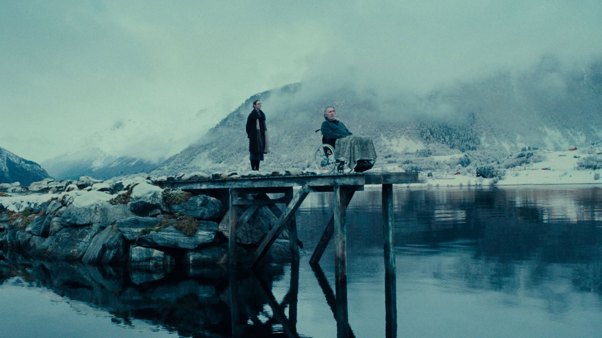
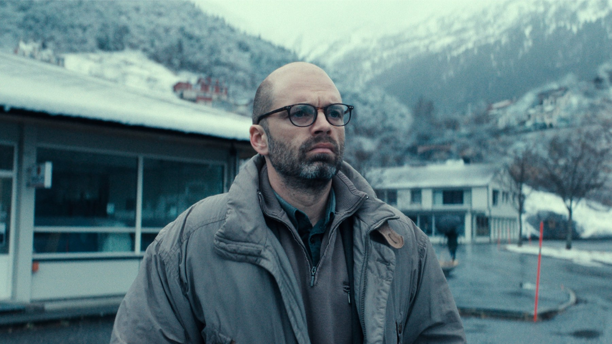
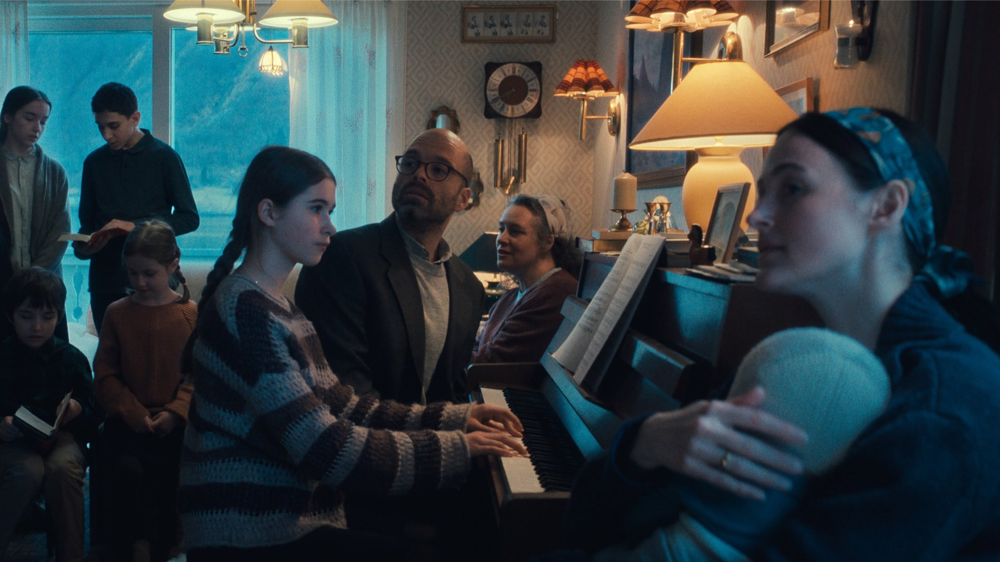

Cannes 2026: Palma d'oro a Fjord e tutti i premi
La giuria di Park Chan-wook premia il dramma familiare con Sebastian Stan e Renate Reinsve, Zvyagintsev prende il Gran premio, regia e interpretazioni divise a metà: il palmarès della 79ª edizione
La 79ª edizione del Festival di Cannes, dal 12 al 23 maggio 2026, si è chiusa con il ritorno al vertice di un autore che la Croisette conosce bene. La giuria presieduta dal sudcoreano Park Chan-wook, regista di Old Boy e Decision to Leave, ha assegnato la Palma d'oro a Fjord di Cristian Mungiu, che diventa così uno dei pochissimi registi ad averla vinta due volte. Un palmarès che ha premiato il cinema europeo e che ha scelto spesso di dividere i riconoscimenti.
Chi ha vinto la Palma d'oro?
Al centro di Fjord c'è una coppia rumeno-norvegese molto devota che, con i figli, lascia tutto per stabilirsi in un paesino sperduto tra i fiordi norvegesi. Basta qualche segno sospetto sul corpo della primogenita perché a scuola, e poi in tutto il villaggio, si cominci a dubitare dei metodi con cui quei genitori crescono i ragazzi. A interpretarli sono Sebastian Stan e Renate Reinsve, l'attrice norvegese già vista nei film di Joachim Trier.
Per Mungiu è la seconda Palma d'oro, diciannove anni dopo quella vinta nel 2007 con 4 mesi, 3 settimane e 2 giorni, il film che aveva fatto conoscere al mondo la nuova onda del cinema romeno. Negli Stati Uniti Fjord è distribuito da Neon, che con questo titolo arriva a sette Palme d'oro consecutive. Aggiornamento di ottobre 2026: in Italia la locandina ne annuncia l'uscita in sala per il 19 novembre.

Com'è nato Fjord?
Fjord è una coproduzione che mette insieme Romania, Norvegia, Danimarca, Finlandia, Francia e Svezia, con sigle come Mobra Films e Why Not Productions. Le riprese si sono svolte a marzo 2025 sul Hjørundfjorden, nella Norvegia occidentale, e il film dura 146 minuti, parlati in inglese, romeno, norvegese e svedese. Il suo percorso è stato rapido: la prima mondiale in concorso è del 18 maggio 2026, accolta da una standing ovation di dodici minuti.
Il tema è quello che Mungiu frequenta da sempre: un dilemma morale in cui nessuno ha del tutto torto e nessuno ha del tutto ragione. Da una parte una famiglia di fede evangelica molto rigida, dall'altra un sistema di protezione dei minori che interviene con strumenti pubblici e con le sue convinzioni. Come ha scritto la stampa internazionale, Fjord è stato uno dei titoli più discussi del concorso, con una critica divisa sul suo sguardo sociale e politico. Per noi è anche un buon segno: un film che divide sta dicendo qualcosa.
Un premio al cinema civile e politico
Il Fatto Quotidiano ha letto il palmarès come il quadro di un cinema attento alla politica e ai valori umani, con molti film che fanno i conti con la guerra. Il segno più netto è arrivato dal Grand Prix: sul palco Andrey Zvyagintsev, autore di Minotaur, ha rivolto un appello al presidente della Federazione Russa perché metta fine al bagno di sangue, come ha riportato TheWrap.
Anche la sceneggiatura premiata ha una storia curiosa. Emmanuel Marre, vincitore per A Man of His Time (il cui titolo francese è Notre salut, ambientato nella Francia di Vichy), ha raccontato di aver scritto una sceneggiatura, di averla buttata e di aver girato l'intero film con un'improvvisazione controllata. Il risultato è stato premiato dalla giuria proprio come scrittura.
Gli altri premi principali
Il Grand Prix, il secondo premio per importanza, è andato a Minotaur del russo Andrey Zvyagintsev, mentre il Premio della giuria è stato assegnato a The Dreamed Adventure della tedesca Valeska Grisebach. La giuria ha poi scelto di dividere quasi tutti i premi individuali.
Il premio per la regia è andato ex aequo agli spagnoli Javier Calvo e Javier Ambrossi per La bola negra e al polacco Paweł Pawlikowski per Fatherland. Anche le interpretazioni sono state premiate in coppia: Virginie Efira e Tao Okamoto per All of a Sudden tra le attrici, Emmanuel Macchia e Valentin Campagne per Coward tra gli attori. La sceneggiatura è andata a Emmanuel Marre per A Man of His Time.
Dietro i nomi dei premi ci sono autori molto noti. Coward, premiato per l'interpretazione maschile con Emmanuel Macchia e Valentin Campagne, è il nuovo film del belga Lukas Dhont, mentre All of a Sudden, che ha dato il premio d'interpretazione femminile a Virginie Efira e Tao Okamoto, porta la firma del giapponese Ryusuke Hamaguchi. Fatherland di Pawlikowski e La bola negra, per la regia ex aequo, arrivano da due tradizioni lontane, la polacca e la spagnola.

Chi è rimasto fuori dal palmarès?
Come sempre, i premi lasciano fuori film amati. Il Fatto Quotidiano segnala l'assenza dal palmarès di El ser querido di Rodrigo Sorogoyen, che il quotidiano considera il film più bello del concorso.
Nelle altre sezioni ufficiali il Un Certain Regard è stato vinto da Everytime di Sandra Wollner, coproduzione tra Austria e Germania. Il film della Caméra d'or, Ben'Imana, nasce invece da una produzione tra Ruanda, Gabon, Francia, Norvegia e Costa d'Avorio: un'opera prima africana che ha convinto la giuria della sezione dedicata ai debutti.
La cerimonia, in breve
La serata è stata condotta dall'attrice francese Eye Haïdara, già madrina dell'apertura. Il festival era iniziato con The Electric Kiss, commedia in costume di Pierre Salvadori, ed è terminato con la proiezione di Thelma & Louise di Ridley Scott, il cui fotogramma con Susan Sarandon e Geena Davis ha dato vita anche alla locandina ufficiale, disegnata da Hartland Villa. Barbra Streisand ha ricevuto la Palma d'oro d'onore in collegamento video, a causa di un infortunio al ginocchio.
Opere prime e Palme d'onore
La Caméra d'or per la migliore opera prima è andata a Ben'Imana della ruandese Marie-Clémentine Dusabejambo. Le Palme d'oro d'onore di questa edizione sono state assegnate a Peter Jackson, Barbra Streisand e John Travolta: Jackson alla serata d'apertura, Travolta prima della proiezione del suo film e Streisand alla cerimonia di chiusura.
Una Palma d'oro al cinema europeo, e una giuria che ha preferito dividere piuttosto che scegliere.
La giuria
Accanto a Park Chan-wook sedevano i registi Diego Céspedes, Paul Laverty, Laura Wandel e Chloé Zhao, fresca del successo di Hamnet, e gli attori Isaach de Bankolé, Demi Moore, Ruth Negga e Stellan Skarsgård. Nessun film italiano era in concorso in questa edizione.
Un palmarès solido e molto europeo, con una Palma d'oro che conferma Cristian Mungiu tra i grandi autori del nostro tempo. Le tante divisioni ex aequo raccontano una giuria indecisa, ma anche un concorso ricco di film forti: molti di questi titoli arriveranno nelle sale italiane nei prossimi mesi.
Domande frequenti
Chi ha vinto la Palma d'oro a Cannes 2026?
Fjord di Cristian Mungiu, con Sebastian Stan e Renate Reinsve: è la seconda Palma d'oro per il regista romeno dopo quella del 2007.
Chi era il presidente della giuria di Cannes 2026?
Il regista sudcoreano Park Chan-wook, con giurati come Chloé Zhao, Demi Moore, Ruth Negga e Stellan Skarsgård.
Quando esce Fjord in Italia?
La locandina italiana annuncia l'uscita in sala per il 19 novembre.
Fonti consultate (8)
- Wikipedia – 2026 Cannes Film Festival
- TheWrap – Cannes Film Festival 2026 winners
- IndieWire – Cannes Film Festival 2026 award winners
- Cineuropa – Cristian Mungiu picks up a second Palme d'Or
- Il Fatto Quotidiano – Cannes 2026, Palma d'oro a Mungiu con Fjord: il palmares completo
- Wikipedia – Fjord (film)
- NPR – Cristian Mungiu's Fjord wins top prize at Cannes
- TMDB – Fjord (2026)